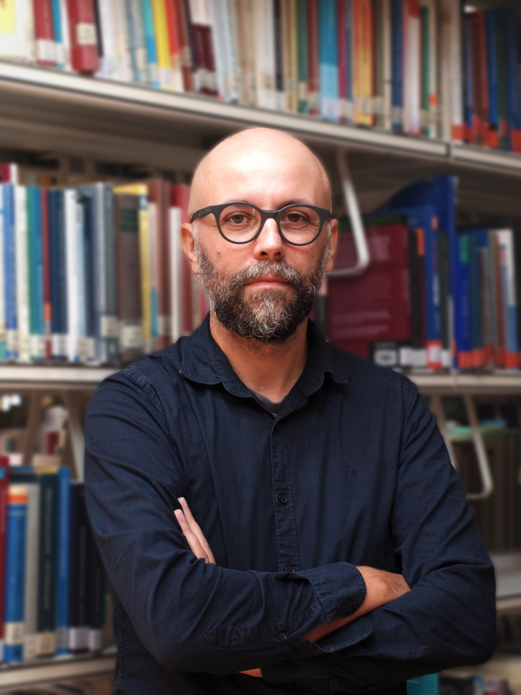

Aleksandar Trklja
Associate Professor at the University of Innsbruck. Researcher in corpus linguistics, language technologies and translation, lexical semantics, and the cognitive foundations of language and translation.
I work at the intersection of linguistic theory, empirical corpus research, and emerging language technologies. My research explores how language structures meaning, how translation relates to cognition, and how AI systems produce and transform texts.

Research areas
Corpus linguistics & lexical semantics
Lexical relations, recurrent lexico-grammatical patterns, and corpus-based models of meaning.
Translation & cognition
Translation as a cognitive capacity, linguistic architecture, and philosophical approaches to understanding.
AI & language technologies
Large language models, machine translation, supercomputing, and linguistic evaluation of generated text.
Language & law
Legal discourse, multilingual EU case law, and comparative corpus research.